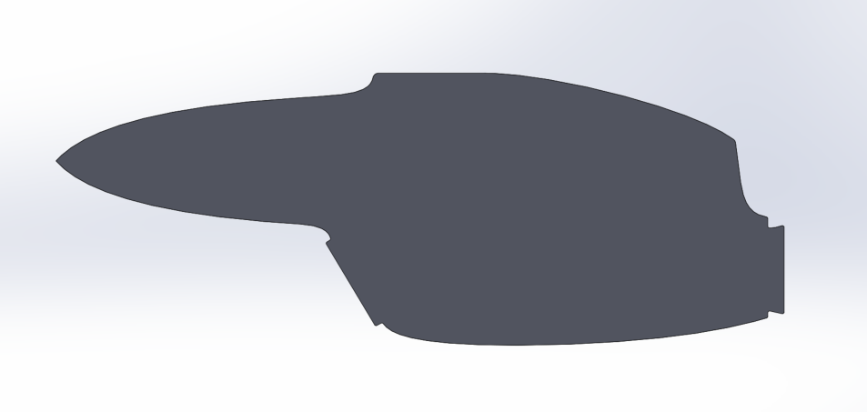
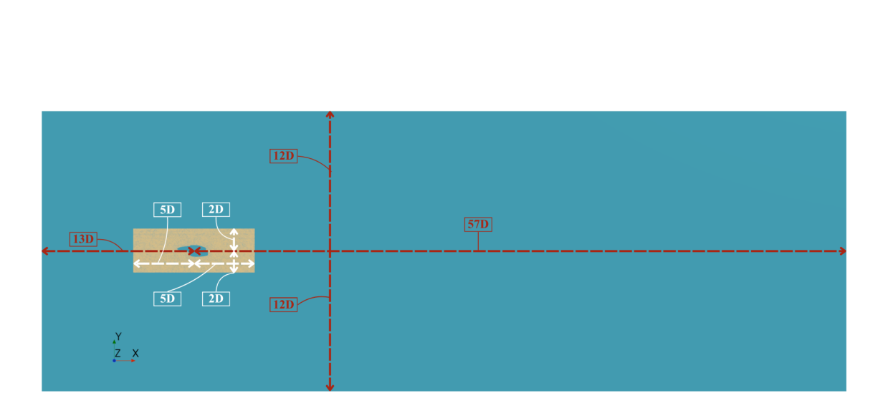

Model & Numerical Setup
Geometry, domain, solver selection, meshing strategy and near-wall treatment.
Geometry and Flow Conditions
- I built a simplified 2D section from the proportions of the XV-15 nacelle, 1.45 m wide and 3.93 m long. No parametric CAD model was available, so the geometry is a representative cross-section.
- Sea-level air as a constant-density fluid. Both cases are low-Mach (M < 0.3), so I used an incompressible formulation throughout.
- No-tilt baseline: 64 m/s (~124 kn), Re = 6.35 × 106. A stationary low-cruise condition I used to qualify the unsteady setup.
- Tilting case: 37 m/s (~72 kn), Re = 3.67 × 106, a representative velocity in the conversion regime, rotating through 45° at 30°/s.

Domain
I sized the domain in multiples of the nacelle width D so the symmetry boundaries could not interfere with the wake: 13D upstream, 57D downstream, and 12D above and below. The domain extends far downstream because the wake is the focus of the study.

Solver Selection
- URANS with the SST k-ω model: I chose SST to keep the near-wall behaviour of k-ω while avoiding the standard model's sensitivity to freestream turbulence specification in the far field.
- Segregated flow solver with PISO coupling: The coupled solver's compressible-flow capabilities were unnecessary, because the flow studied is incompressible. I chose PISO over SIMPLE and SIMPLEC because the study required a small timestep for wake resolution. At smaller timesteps, the PISO algorithm is faster while maintaining the same level of temporal accuracy.
- 2nd-order temporal discretisation at Δt = 1 × 10-5 s: I tried an Implicit Unsteady model first to attempt simulations with CFL > 1, but increasing the timestep degraded the transient response, and in tilting it resulted in residual divergence at around 12°. The runtime saving did not justify the major loss of fidelity or the inability to finish runs.
- I checked the timestep against the CFL condition in both cases: 0.680 for the no-tilt case, and a deliberately smaller 0.336 for tilting, since CFL proved sensitive to the rotation.
At 30°/s the chosen timestep corresponds to 3 × 10-4 degrees of rotation per step, or 150,000 steps across the full sweep. The timestep is set by solution stability and wake resolution rather than by the need to resolve the motion itself.
Meshing and Motion Treatment
Large rotations required careful comparison of mesh motion strategies. I selected overset (chimera) meshing over mesh morphing on a weighted decision matrix, mainly because morphing degrades cell quality under large rotation while overset preserves local mesh quality around the body.
- The tilting domain splits into three regions: background, nacelle overset, and the overlap that couples them. I concentrated resolution in the overset and overlap, because they govern the regions where vortices form and the wake develops.
- The no-tilt case needed no overset, so it used a single region with near-body and background wake refinement.
- I generated the five tilting meshes by changing base size alone, at a refinement ratio of 1.5, so grid changes stay consistent between runs.

Near-Wall Treatment
Near-wall treatment dictates the behaviour of flow separation, so I estimated the first-cell height for each case from a turbulent flat-plate approximation of wall shear stress at a chosen target y+, using a growth ratio of 1.2.
- No-tilt case, wall-resolved: Targeting y+ ≈ 1, resulting in 34 prism layers. This mesh was computationally cheap while resolving the wall directly, making it a suitable reference for selecting the unsteady model.
- Tilting case, wall-modelled: Using the log law, targeting y+ ≈ 70 with 10 prism layers, a compromise to keep the overset runs affordable without significantly compromising the force coefficients.
The tilting runs did not maintain that target y+. The transient runs left most of the nacelle surface between y+ ≈ 5 and 40 depending on the mesh. I elaborate on that shortfall in Validation & Mesh Sensitivity.